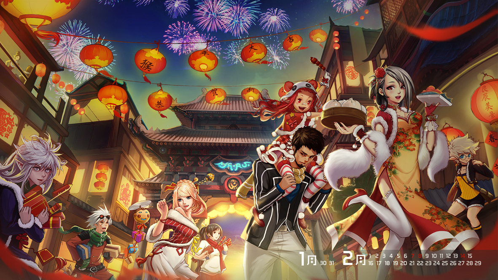
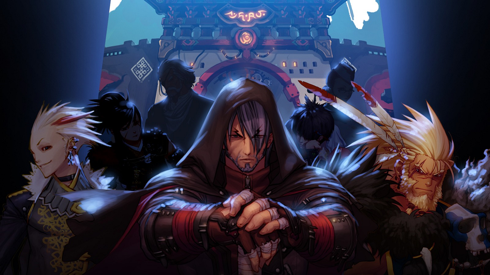

故事背景
在阿拉德大陆的文明之光闪耀之前，世界是一个无边的宇宙，孕育着各种形态的生命。这些生命分散在各种虚空异界和地下城堡里，用它们的勤劳和智慧，创建着世界的繁荣。
生存在完美大陆阿拉德的人类和精灵，也属于各种形态的生命之一。他们用诸神赋予的智慧，创造了被众多异界生命钦羡的阿拉德文明。相传，连接阿拉德大陆和其它虚空异界的天空之城，就是天族和魔族为方便往来阿拉德大陆而建造的。
在各种虚空异界里，存在一种叫做“生命之水”的物体，可以使获得者拥有无限的生命。生命之水的出现，引起了各异界生命的争夺。魔族使徒“爆龙王”巴卡尔为抢夺生命之水，率领其手下的龙人和以赫尔德为中心的魔族使徒们展开了被称为“龙之战争”的魔族大战。
那是一场天地变色、伤亡惨重的毁灭之战，鲜血染红了魔族的土地！战败的巴卡尔通过寂静城逃向了天界，并堵死了魔界通往天界的所有道路。逃向天界的巴卡尔，为了削弱天族的反抗，不仅下了封杀魔法令，还用强大的魔法制造了具有邪恶力量的光之战士，并命他们守卫着天空之城，完全阻断了天界和阿拉德大陆的连接。
天界进入了巴卡尔统治的黑暗期，而阿拉德大陆的繁荣和辉煌，似乎也随着天空之城的消失而开始毁灭。精灵和人类决裂，大部分精灵从阿拉德大陆消失，不知踪迹。缺失精灵庇护的阿拉德大陆，进入了文明的荒漠期，渐渐地在历史的洪流中隐退。
然而，千年后，一场突如其来的异变，让原本归于平静的阿拉德大陆再次卷入血雨腥风之中。
先是一场如瘟疫般的异变，让阿拉德大陆上的动植物在一夕之间纷纷魔化成邪恶的怪物，它们凶残嗜血，肆意吞噬着人类的生命，死亡和恐慌迅速在阿拉德大陆蔓延。
接着一场大火如流星般坠落在格兰之森，熊熊的烈焰烧毁了格兰之森的大部分植被，却无法摧毁异变的动植物。格兰之森陷入了一片妖异的火海中，成了死亡之林。精灵也从森林里彻底消失。
各种异变现象频繁的出现在阿拉德大陆各地，异变的动植物也越来越疯狂。即使出现了为铲除怪物而不畏艰辛的穿行在阿拉德大陆各地的冒险家们，也无法让异变得到一丝缓解，阿拉德大陆陷入无边的黑暗之中。
更让人忧心的是，原本消失的天空之城又重新出现在阿拉德大陆上。随着它的出现，各种邪恶势力蠢蠢欲动：黑色瘟疫笼罩着人类的村庄，村庄里的人全部死亡，无一幸免；暗精灵趁混乱向人类发动战争；贝尔玛尔公国的领土被相邻的帝国侵占。
远在斯特鲁山脉北部的冰龙斯卡萨也在这时候冬眠醒来，它强大的寒冰力量让斯特鲁地区陷入了一个漫天冰雪的世界。饱受寒冷、饥饿摧残的班图族翻越斯特鲁山脉，野蛮入侵了贝尔玛尔的帝国防线。
因异变带来的混乱，在阿拉德大陆蔓延，各种虚空异界的再次出现，让整个世界陷入了癫狂之中。
势力划分
贝尔玛尔公国
贝尔玛尔公国距今已有500年的历史，其领土从大陆西 南部的法罗湾开始，北面与虚祖接壤。公国的首都位于赫顿玛尔。女王是斯卡迪，但实际上公国的政权是掌握在3位议员手中。 贝尔玛尔在精灵语中意为：善良人的国度。这里土地肥沃，人们安居乐业，生活自在，整体看来确实是一个富饶的国家。另外，贝尔玛尔在绘画、音乐、诗歌、文学、出版等方面，也都有比较均衡的发展。 军事方面，虽然北面有班图族入侵，但公国凭借地理优势，倚仗虚祖国与帝国帮忙抵挡，所以一直以来，并不重视培植强大的军事力量；而且自从300年前，佩鲁斯帝国灭亡之后，来自海上的威胁也消除了，因此公国内部更加忽视国防安全。 也因为这样，在后来的侵略战争中，公国惨败，现被德洛斯帝国所占领。
德洛斯帝国
强大的佩鲁斯帝国在血之诅咒的蔓延下，轰然倒塌。随着时光的流转，野心勃勃的帝国后裔们不甘寂寞，又以复兴帝国为名建立了一个新的王朝，即德洛斯帝国。 德洛斯帝国以法罗湾为界，划分为南北两边。首都则位于南部的黄金都市帷塔伦。 虽然这是一个由皇帝统治的中央集权制国家，但由于南北地域的分隔，两地的氛围截然不同。相比南部严格的军事化管理，北部的民风更为活泼开放。 尽管如此，但他们之间的凝聚力非常强，一旦遭遇危险，两地的人民便会团结一致，共同对外。这很大程度上是源于帝国的国民自身拥有的自豪感与使命感。
虚祖
虚祖的首都为素喃，统治者是贤安王凯弋。 虽然虚祖的历史与佩鲁斯帝国相比还有些差距，但根据国内史学家的研究，虚祖国存在已长达2000多年。 位于阿拉德大陆西北方的虚祖，国土面积并不辽阔，服饰和语言文化也与其他国家不同，这里的居民给人的印象十分精明，虽然他们多数瘦弱矮小，但其中却有着不少念气高手。 性格温顺的虚祖人并不在意国土的狭小，因而不会去刻意地发动战争，抢占其他国家的领土，但是若是遭遇外敌入侵，那些平时隐居着的气功师们会纷纷从山涧、峡谷、洞穴中走出，合力将敌人击退。 在素喃的边缘地区开设了不少道场，其中多数还都是由年轻的气功师经营。除了道场之外，附近的市场里也经常能淘到便宜优质的太刀，所以在这里即使是一个走路看起来晃晃悠悠的大叔，一但受到挑畔也可能立马变为使用拔刀术的武士。正因为这里深藏不露的高手太多，所以做什么事都该慎重一些。
班图
班图族是居住在斯特鲁山脉北部边界所有部族的总称，族长是布万加。 这里最大的城市叫阿姆罗斯。详细的历史现已无从考证。 班图族如今被分裂成几个小部族，分别是沃克族、库尼族和图卢斯族。这些部族间的关系并不和睦。 不过一但遭遇劫难，不管是饥荒还是冰龙斯卡萨苏醒后带来的食物短缺，这几个势力都会团结起来，一齐翻越斯特鲁山脉，将族人们安全转移到大陆腹地。 明年冬眠中的冰龙斯卡萨又该苏醒了，帝国和虚祖也开始要为时隔30年的班图族入侵而做准备。
灭亡古国
佩鲁斯帝国
德洛斯帝国的前身，破坏之神卡赞和混沌之神奥兹玛还是人类的时候曾效力过的国家。正如现在的德洛斯帝国一样，当年的佩鲁斯帝国也拥有强大的军事实力，可以说几乎无人能敌。特别是在传说中的卡赞和奥兹玛共同辅佐的时期，佩鲁斯强大到足以统一整个阿拉德大陆。但是后来因为一场阴谋，卡赞流亡在外，奥兹玛则成了混沌之神。为了报复帝国，奥兹玛向人类世界散播了血之诅咒。随着诅咒在帝国境内的蔓延，伪装者越来越多，整个帝国逐渐土崩瓦解。
背迩王国
古代王国，“冰霜之萨亚”公主生活的国家。据传，当年萨亚公主与临国灾岸王国的王子乔恩相恋并私定终身。可是因为国境纠纷，乔恩选择了国家利益，放弃了萨亚。最后萨亚在战争中亲手杀死了乔恩，然后在他尸体旁结束了自己的生命。
灾岸王国
古代王国，后来在与背迩王国的战争中灭亡。灾岸王国的王子乔恩本来与邻国萨亚公主是一对恋人，但是因为两国的国境纷争，使得关系恶化。最后乔恩选择了王国的利益，放弃了和萨亚的爱情。惨遭背叛的萨亚愤恨之下，带领着大批军队攻入了灾岸王国内部，并且在王宫内亲手杀死了乔恩，最后还在他的尸体旁自尽。萨亚临死前的悲伤与怨恨，形成了强大的诅咒，牢牢地束缚着整个灾岸王宫，一起沉入了黑暗的地底。
